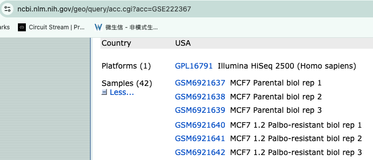
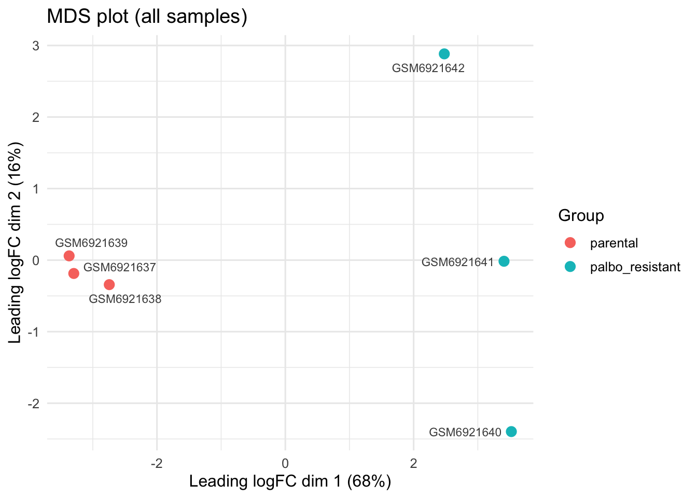
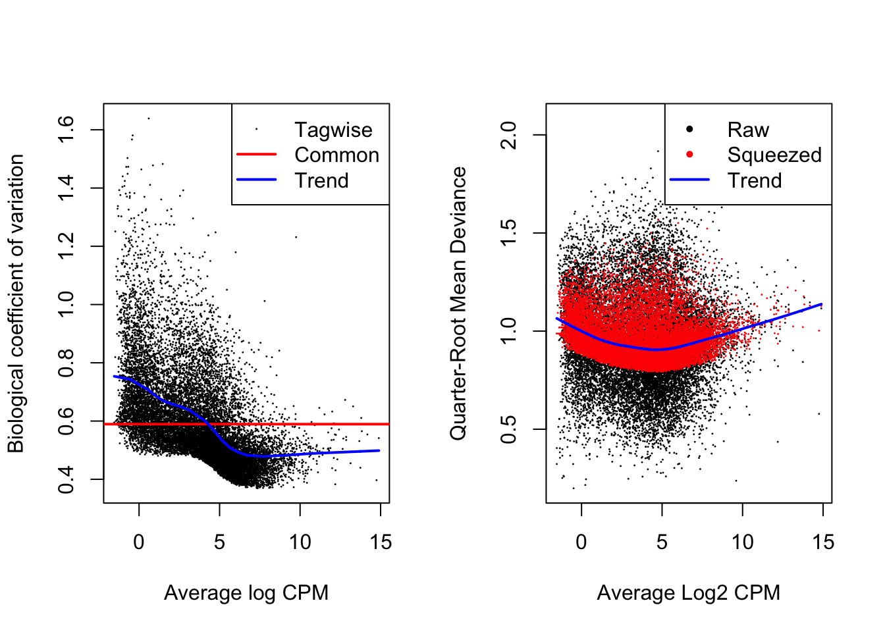
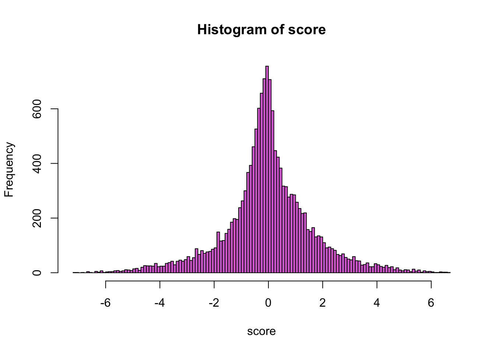
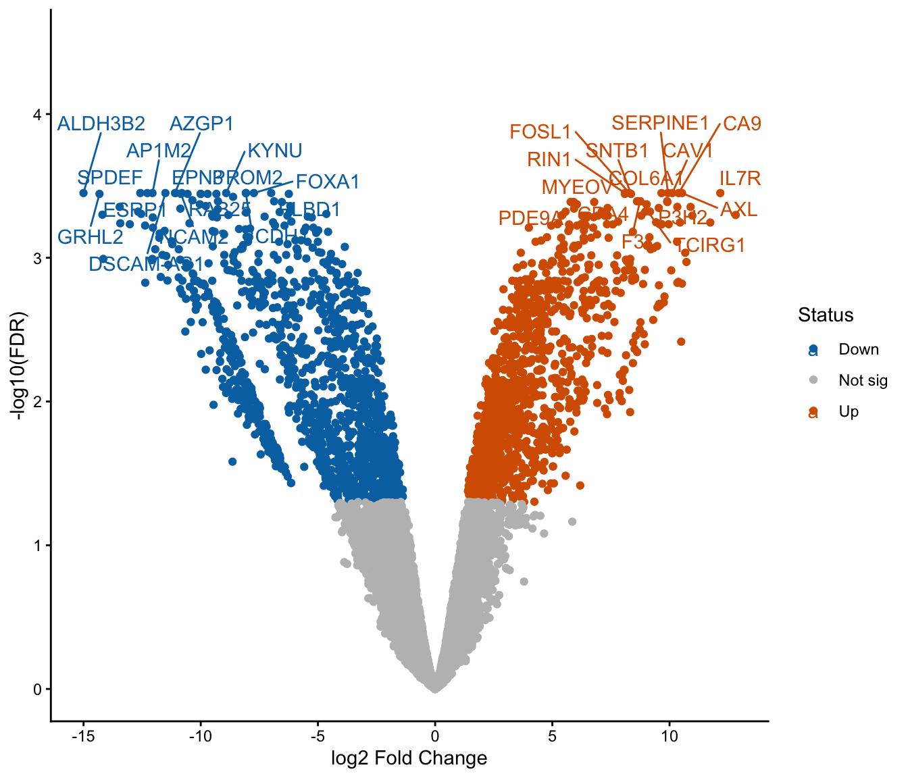

Differential Expression
This work is licensed under a Creative Commons Attribution-ShareAlike 4.0 Unported License. This means that you are able to copy, share and modify the work, as long as the result is distributed under the same license.
We perform differential expression analysis using a negative binomial generalized linear model using the edgeR package.
0.1 Install and load libraries
## CRAN and Bioconductor setup
if (!requireNamespace("BiocManager", quietly = TRUE))
install.packages("BiocManager")
## List of CRAN packages
cran_packages <- c(
"tidyverse",
"gprofiler2",
"ggrepel"
)
# List of Bioconductor packages
bioc_packages <- c(
"edgeR",
"fgsea"
)
# Install CRAN packages if not already installed
for (pkg in cran_packages) {
if (!requireNamespace(pkg, quietly = TRUE)) {
install.packages(pkg)
}
}
# Install Bioconductor packages if not already installed
for (pkg in bioc_packages) {
if (!requireNamespace(pkg, quietly = TRUE)) {
BiocManager::install(pkg)
}
}
# Load the libraries
# CRAN packages
library(tidyverse)## -- Attaching core tidyverse packages ------------------------ tidyverse 2.0.0 --
## v dplyr 1.2.1 v readr 2.2.0
## v forcats 1.0.1 v stringr 1.6.0
## v ggplot2 4.0.3 v tibble 3.3.1
## v lubridate 1.9.5 v tidyr 1.3.2
## v purrr 1.2.2
## -- Conflicts ------------------------------------------ tidyverse_conflicts() --
## x dplyr::filter() masks stats::filter()
## x dplyr::lag() masks stats::lag()
## i Use the conflicted package (<http://conflicted.r-lib.org/>) to force all conflicts to become errors## Loading required package: limma0.2 Data used for this comparison
For this analysis, we are going to compare the Palbo-resistant cell lines (3 biological replicates) versus the parental cell lines (3 biological replicates)
Figure 2: GEO dataset
0.2.1 generate a DGE object
# 1. Find the count files
files <- list.files(path = "data", pattern = "\\.txt\\.gz$", full.names = TRUE)
# 2. Sample names from the file names (strip the extension)
samples <- sub("_S.*", "", basename(files))
# 3. Read the files into a DGEList
# HTSeq output has no header: column 1 = gene ID, column 2 = count.
# R reads gzipped files directly, so no need to decompress.
dge <- readDGE(files, columns = c(1, 2), header = FALSE, labels = samples)## Meta tags detected: __no_feature, __ambiguous, __too_low_aQual, __not_aligned, __alignment_not_unique# 4. Remove HTSeq summary rows (__no_feature, __ambiguous, etc.)
dge <- dge[!grepl("^__", rownames(dge)), , keep.lib.sizes = FALSE]
# 5. (Optional) add group information
dge$samples$group <- factor(
c("parental", "parental", "parental",
"palbo_resistant", "palbo_resistant", "palbo_resistant"),
levels = c("parental", "palbo_resistant") # parental = reference
)0.3 Filter low-count genes and TMM-normalize
keep <- filterByExpr(dge, group = dge$samples$group)
dge <- dge[keep, , keep.lib.sizes = FALSE]
dge <- calcNormFactors(dge, method = "TMM")
cat("Genes retained after filtering:", nrow(dge), "\n")## Genes retained after filtering: 15246group = dge$samples$group
var_pct <- round(100 * mds$var.explained[mds$dim.plot])
mds_df <- data.frame(dim1 = mds$x, dim2 = mds$y,
sample = colnames(dge), group = group)
ggplot(mds_df, aes(x = dim1, y = dim2, color = group)) +
geom_point(size = 3) +
ggrepel::geom_text_repel(aes(label = sample), size = 3, color = "grey30",
show.legend = FALSE, max.overlaps = Inf,
box.padding = 0.4, segment.color = "grey60") +
labs(title = "MDS plot (all samples)",
x = sprintf("Leading logFC dim %d (%d%%)", mds$dim.plot[1], var_pct[1]),
y = sprintf("Leading logFC dim %d (%d%%)", mds$dim.plot[2], var_pct[2]),
color = "Group") +
theme_minimal(base_size = 12) +
theme(legend.position = "right")
0.4 Design (~0 + group) and named contrast
design <- model.matrix(~ 0 + group, data = dge$samples)
colnames(design) <- levels(dge$samples$group) # "parental", "palbo_resistant"
contr <- makeContrasts(
resistant_vs_parental = palbo_resistant - parental, # + logFC = up in resistant
levels = design
)
head(design)## parental palbo_resistant
## GSM6921637 1 0
## GSM6921638 1 0
## GSM6921639 1 0
## GSM6921640 0 1
## GSM6921641 0 1
## GSM6921642 0 10.5 Dispersion estimation and quasi-likelihood GLM
dge <- estimateDisp(dge, design, robust = TRUE)
fit <- glmQLFit(dge, design, robust = TRUE)
par(mfrow = c(1, 2)); plotBCV(dge); plotQLDisp(fit)
0.6 Calculating ranking score and export full results
## logFC logCPM F PValue FDR gene score
## FOXA1 -7.733381 7.036614 212.9072 7.319997e-08 0.0003543738 FOXA1 -7.135489
## ESRP1 -12.579669 6.455576 208.4055 8.469988e-08 0.0003543738 ESRP1 -7.072117
## AZGP1 -11.099954 7.258554 184.8560 1.464633e-07 0.0003543738 AZGP1 -6.834271
## EPN3 -11.064332 6.286707 169.9951 2.143977e-07 0.0003543738 EPN3 -6.668780
## AP1M2 -12.059269 6.763487 169.5441 2.169978e-07 0.0003543738 AP1M2 -6.663545
## CAV1 10.118680 6.613522 165.7532 2.404307e-07 0.0003543738 CAV1 6.619010##visualization
### histogram of the ranking score
hist(res$score, breaks=100, col="orchid", xlab = "score", main = "Histogram of score")
# Step 1: add -log10(FDR), and label each gene Up / Down / Not sig
res <- res %>%
mutate(
negLogFDR = -log10(FDR),
status = case_when(
FDR < 0.05 & logFC > 0 ~ "Up",
FDR < 0.05 & logFC < 0 ~ "Down",
TRUE ~ "Not sig"
)
)
# Step 2: pick the top 15 most significant genes on each side, to label
top_up <- res %>% filter(status == "Up") %>% arrange(FDR) %>% slice_head(n = 15)
top_down <- res %>% filter(status == "Down") %>% arrange(FDR) %>% slice_head(n = 15)
top_genes <- bind_rows(top_up, top_down)
# Step 3: plot
ggplot(res, aes(x = logFC, y = negLogFDR, color = status)) +
geom_point() +
scale_color_manual(values = c("Up" = "#D55E00", "Down" = "#0072B2", "Not sig" = "grey")) +
ggrepel::geom_text_repel(data = top_genes, aes(label = gene), max.overlaps = Inf) +
labs(x = "log2 Fold Change", y = "-log10(FDR)", color = "Status")+
coord_cartesian(ylim = c(0, 4.5)) +
theme_classic()
0.8 Version of packages and R
## R version 4.3.2 (2023-10-31)
## Platform: aarch64-apple-darwin20 (64-bit)
## Running under: macOS 15.5
##
## Matrix products: default
## BLAS: /Library/Frameworks/R.framework/Versions/4.3-arm64/Resources/lib/libRblas.0.dylib
## LAPACK: /Library/Frameworks/R.framework/Versions/4.3-arm64/Resources/lib/libRlapack.dylib; LAPACK version 3.11.0
##
## locale:
## [1] C
##
## time zone: America/Toronto
## tzcode source: internal
##
## attached base packages:
## [1] stats graphics grDevices datasets utils methods base
##
## other attached packages:
## [1] fgsea_1.28.0 edgeR_4.0.16 limma_3.58.1 ggrepel_0.9.8
## [5] gprofiler2_0.2.4 lubridate_1.9.5 forcats_1.0.1 stringr_1.6.0
## [9] dplyr_1.2.1 purrr_1.2.2 readr_2.2.0 tidyr_1.3.2
## [13] tibble_3.3.1 ggplot2_4.0.3 tidyverse_2.0.0
##
## loaded via a namespace (and not attached):
## [1] fastmatch_1.1-8 gtable_0.3.6 xfun_0.61
## [4] bslib_0.12.0 htmlwidgets_1.6.4 lattice_0.22-7
## [7] tzdb_0.5.0 vctrs_0.7.3 tools_4.3.2
## [10] generics_0.1.4 parallel_4.3.2 pkgconfig_2.0.3
## [13] Matrix_1.6-5 data.table_1.18.6.1 RColorBrewer_1.1-3
## [16] S7_0.2.2 lifecycle_1.0.5 compiler_4.3.2
## [19] farver_2.1.2 statmod_1.5.2 codetools_0.2-20
## [22] htmltools_0.5.9 sass_0.4.10 yaml_2.3.12
## [25] plotly_4.12.1 pillar_1.11.1 jquerylib_0.1.4
## [28] BiocParallel_1.36.0 cachem_1.1.0 tidyselect_1.2.1
## [31] locfit_1.5-9.12 digest_0.6.39 stringi_1.8.9
## [34] bookdown_0.48 splines_4.3.2 labeling_0.4.3
## [37] cowplot_1.2.0 fastmap_1.2.0 grid_4.3.2
## [40] cli_3.6.6 magrittr_2.0.5 withr_3.0.3
## [43] scales_1.4.0 timechange_0.4.0 rmarkdown_2.32
## [46] httr_1.4.9 otel_0.2.0 hms_1.1.4
## [49] evaluate_1.0.5 knitr_1.52 viridisLite_0.4.3
## [52] rlang_1.3.0 Rcpp_1.1.2 glue_1.8.1
## [55] BiocManager_1.30.27 renv_1.2.4 rstudioapi_0.19.0
## [58] jsonlite_2.0.0 R6_2.6.1